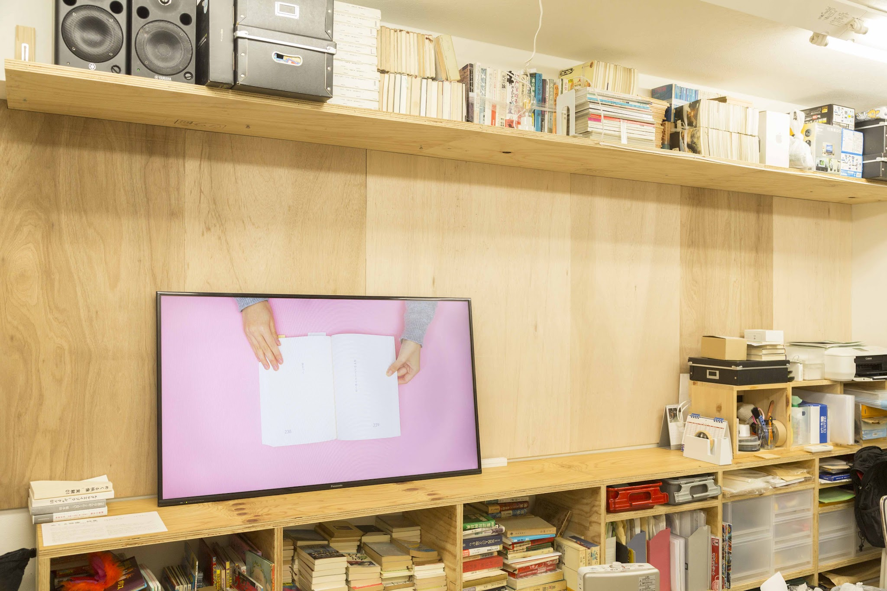
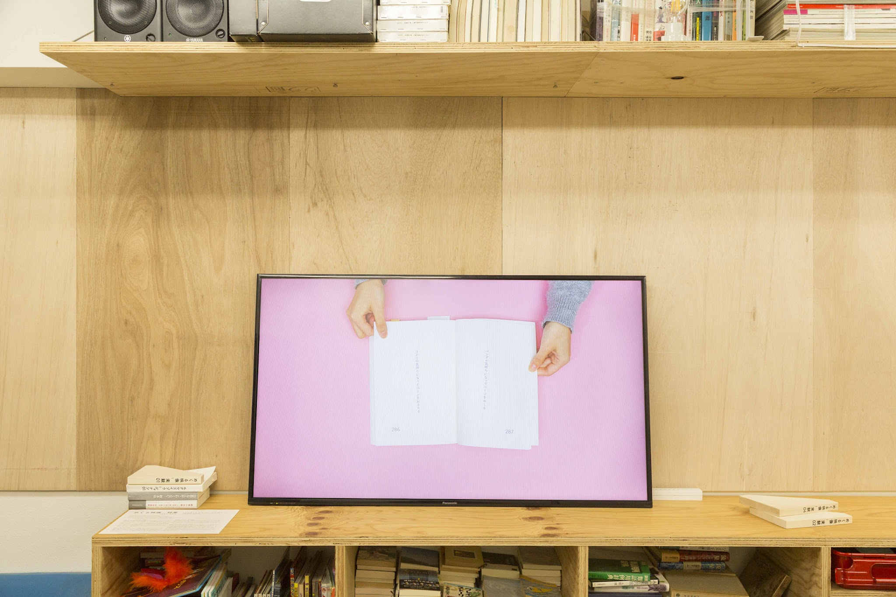

JPめくる映像 実験 01(ひたすらに本をめくる実験)
ENTurning over Pages in the Monitor#1
伊東 友子 ＋ 時里 充 / Tomoko Ito + Mitsuru Tokisato
2017
「実験 01 の中では一冊の本が淡々とめくられていきます。本に書かれている文章は、ページを めくる際の指示でもあり、時には、ページをめくった動作を書き起こしたものでもあります。 または、これから起きるかもしれないできごとに対するトリガーとも言えます。
この映像には複数の立場からの視点が介入します。本の作者、本をめくるパフォーマー、映 像の撮影・編集者、映像を見る鑑賞者。本に書かれるテキストの主体は、それらをシームレ スに経由していきます。 そこに存在するゆらぎはそもそも言葉が保有している特徴であり、文章を読む際、無意識に 読み取り、判別して処理しているものです。
実験 01 における「ページをめくる」という動作は、それを切り取り浮かび上がらせ、ページをめくる手は誰のものなのか? 書かれる言葉は誰のものなのか? という疑問をなげかけ、鑑 賞者の視点を揺さぶります。

